8.3 Ordem de precisão
Considere o problema de valor inicial dado por
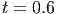
Nessa seção vamos definir a precisão de um método numérico pela ordem do erro
acumulado ao calcular o valor da função em um ponto 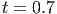 em função do
espaçamento da malha 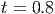. Se 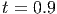 pode ser aproximado por uma expressão que
depende de 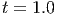, 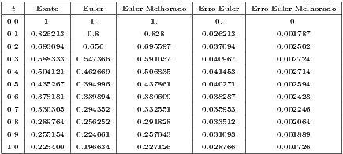, 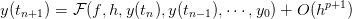, 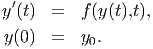, 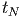, 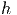, com erro da ordem de 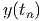,
ou seja,
para cada função analítica  , dizemos que o método tem erro de truncamento
da ordem de 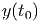 ou ordem de precisão
, dizemos que o método tem erro de truncamento
da ordem de 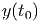 ou ordem de precisão  . Essa afirmação faz sentido
quando fazemos a seguinte análise informal: para aproximar , acumulamos
erros da ordem 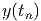, para calcular 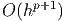 acumulamos os erros de 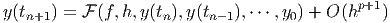 e novos
erros
. Essa afirmação faz sentido
quando fazemos a seguinte análise informal: para aproximar , acumulamos
erros da ordem 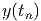, para calcular 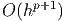 acumulamos os erros de 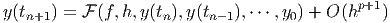 e novos
erros  . Para calcular 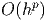, acumulamos todos os erros até 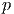, ou seja,
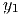 vezes 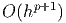. Como 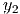, temos que os erros ao calcular 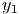 são
da ordem 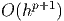. É verdade que essa análise só vale quando impomos
condições de suavidade para 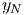 e condições adequada para a expressão
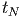. Para explicar melhor esse pequeno texto,
fazemos em detalhes essa operação para o método de Euler na seção
8.3.1.
. Para calcular 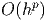, acumulamos todos os erros até 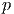, ou seja,
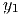 vezes 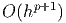. Como 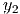, temos que os erros ao calcular 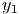 são
da ordem 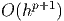. É verdade que essa análise só vale quando impomos
condições de suavidade para 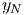 e condições adequada para a expressão
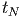. Para explicar melhor esse pequeno texto,
fazemos em detalhes essa operação para o método de Euler na seção
8.3.1.
8.3.1 Ordem de precisão do Método de Euler
Primeiro lembramos da expressão (8.4) que origina a seguinte relação de
recorrência:
Para entender melhor o motivo de na expressão (8.9) aparecer 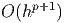 e o
método ser de precisão 1, vamos a seguinte análise informal: observemos que
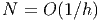
onde 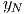 é a aproximação pelo método de Euler para o valor exato 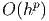.
Subsequentemente, temos
onde usamos o primeiro termo da série de Taylor 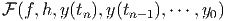
na passagem da segunda para terceira linha. Repetindo sucessivamente o passo
anterior, obtemos uma expressão geral para o valor exato 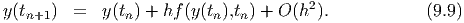 em termos do
valor aproximado 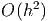:
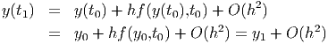
Como 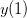, temos ou seja, o erro entre o valor exato e o aproximado é de ordem 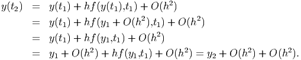. Uma
demonstração mais formal que garante que o erro é limitado por uma expressão
que é proporcional a 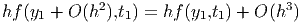 está discutido na seção 8.4.1.
8.3.2 Ordem de precisão do Método de Euler Melhorado
Para obter o erro de precisão do método de Euler Melhorado vamos calcular o
erro de truncamento do método, ou seja, precisamos demonstrar que:
De fato, tomando a diferença do termo da esquerda o os termos da direita, temos:
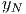
onde usamos uma expansão em série de Taylor para 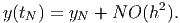 e a equação
diferencial 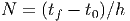. Portanto,
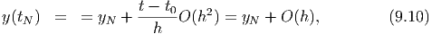
Agora, usamos a série de Taylor de  e, torno de 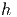:
e, torno de 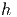:
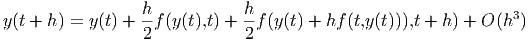
Usando a equação diferencial 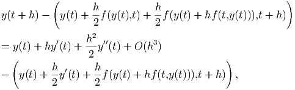 obtemos
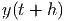
Logo, Portanto, a expressão (8.11) é válida. Logo, usando uma discussão análoga aquela
feita na seção 8.3.1 para o método de Euler, concluímos que o método de Euler
Melhorado possui ordem de precisão 2.